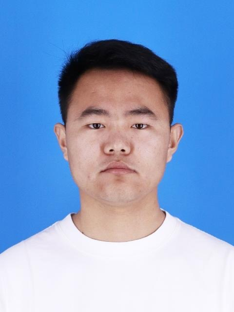

赵志鹏Zhipeng Zhao
多模态大模型 · 视觉语言模型 · 可信AI · 因果推断
求职意向：算法工程师 · 大模型算法工程师 · 多模态算法工程师 · 大模型调优/部署/应用
教育背景与荣誉
博士：中国海洋大学 · 人工智能专业（信息科学与工程学部） · 2023.08 – 至今（预计 2027.06 毕业）
硕士：中国海洋大学 · 计算机应用技术专业 · 2020.08 – 2023.06
本科：青岛大学 · 测控技术与仪器专业 · 2015.09 – 2019.06
出生年月：1997.04
荣誉：“建行杯”第七届山东省“互联网+”大学生创新创业大赛铜奖（省级，2021）；参与国家重点研发计划 2022YFB3305803 等 5 项课题。
审稿人：AAAI、NeurIPS、ACM MM、ACL、EMNLP
技术栈
编程语言：Python · C++ · Java · C#
深度学习：PyTorch · TensorFlow · DeepSpeed · FlashAttention-2 · Transformers
大模型：LLaMA · Qwen/Qwen-VL · DeepSeek-VL · Phi · LLaVA · InternVL
微调/对齐：LoRA/QLoRA · SFT · DPO · RLHF · RAG · Agent
部署/平台：vLLM · Ollama · Docker · Linux · NVIDIA/昇腾（NPU）
研究成果
- 提出因果启发的“视觉主导”(V2L)跨模态注意力干预框架，通过后门调整抑制语言先验，无需微调即可嵌入现有 LVLM 推理流程，实现推理时性别偏见抑制。
- 在 FACET / MS COCO / FairFace / POPE / MMMU 多基准验证：FACET 单属性性别偏见降低 14.7%，LLaVA 在 MS COCO 公平性评分由 0.6708 提升至 0.9978，同时保持推理能力与文本质量。
- 提出基于因果中介分析的层级别激活替换诊断框架，将性别线索效应分解为各层激活的受控间接效应(AIE)与其余路径的直接效应，产出逐层“机制签名”，为精准干预提供依据。
- 覆盖 LLaVA-1.5 / LLaVA-NeXT / InstructBLIP(7B/13B) 及 MiniCPM-V / InternVL3.5 等 6 模型、3 类架构；发现语言层主导输出敏感度、架构决定层间分布、反事实与表面分数分歧，并实证诊断-干预仅弱相关(r=0.33)。
- 提出免训练的对比解码框架 SAFE，通过“有视觉/去视觉”双路生成得到 token 级视觉依赖分数，用于幻觉定位与解码时惩罚，无需重训练即可部署。
- 在 LLaVA-1.5 / InstructBLIP / Shikra 与 MMHalBench / POPE / HallusionBench / CHAIR / MMMU 五基准上验证，MMHalBench 显著超越全部基线；并揭示视觉依赖随生成衰减、幻觉时间聚集、早期干预可抑制聚集等机理。
一种电器拆解过程人员行为识别模型训练及行为识别方法及系统
2023.08–2024.12 · 第一发明人发明专利
- 基于海尔工厂监控构建 1.02 亿图像-文本对数据集，覆盖安全装备检测、6 类拆解动作识别与危险行为预警，带领 8 人团队完成数据质检。
- 基于 LLaVA-1.5 设计 LoRA/QLoRA(4-bit)+FlashAttention-2 微调方案（单卡 RTX 4090 达全参微调 83% 精度）；落地后拆解效率 +52%、事故 -34%。申请号 2024116855732，公布号 CN119919993A（2024.11）。
demucs_ascend910_pytorch：Demucs 音乐源分离模型昇腾 910 适配
- 将 Meta 开源 Demucs（Hybrid Transformer 音乐源分离模型）适配至华为昇腾 910（NPU）的开源 PyTorch 实现，仓库获 9 个 star。
学术论文
[1] Zhao Zhipeng（第一作者）. ViD: Vision-Dominant Gender Bias Mitigation for Large Vision-Language Models. EMNLP 2026（已录用，NLP 领域顶级学术会议，CCF-B / Core A*）.
[2] Zhao Zhipeng（第一作者）. Mechanism-Level Evaluation for Vision-Language Models: Controlled Activation-Replacement Diagnosis of Gender Bias. EMNLP 2026（已录用，NLP 领域顶级学术会议，CCF-B / Core A*）.
[3] Zhao Zhipeng（第一作者）. What Do Hallucinations Reveal About Multimodal Reasoning? Diagnosing Visual Grounding Failures via Contrastive Decoding Probes. EMNLP 2026（已录用，NLP 领域顶级学术会议，CCF-B / Core A*）.
IEEE TMM 在投（均为第一作者）：[4] DUAL-Parallel: Parallel Relative Uncertainty Comparison for Visual Grounding under Conflicting Gender Prompts in Vision-Language Models；[5] IntervMed-Bias: Component-Level Diagnostic Evaluation of Gender Sensitivity in Large Vision-Language Models via Intervention Perturbation Analysis；[6] Temporal Decay of Visual Grounding as a Safety Indicator for Vision-Language Model Deployment；[7] Encoding or Arbitration: A Mechanistic Taxonomy of Hallucination Failure Modes for Safe Vision-Language Systems。
AAAI 在投（均为第一作者）：[8] Diagnostic Signals for Visual Grounding via Counterfactual Perturbation in Vision-Language Models；[9] When Shorter Answers Mask Unsafe Behavior: A Length-Normalized Re-Evaluation of Hallucination Benchmarks for AI Alignment。